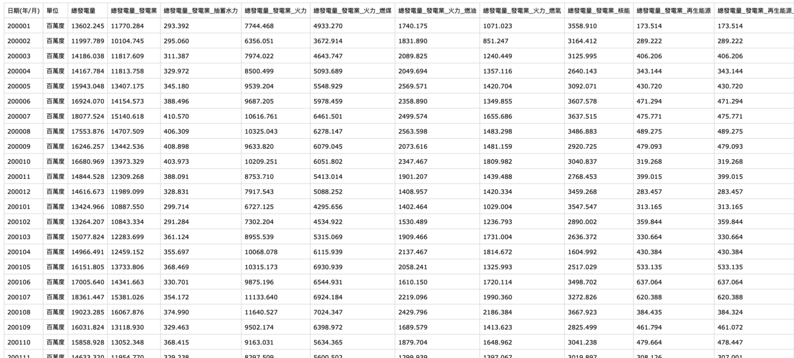
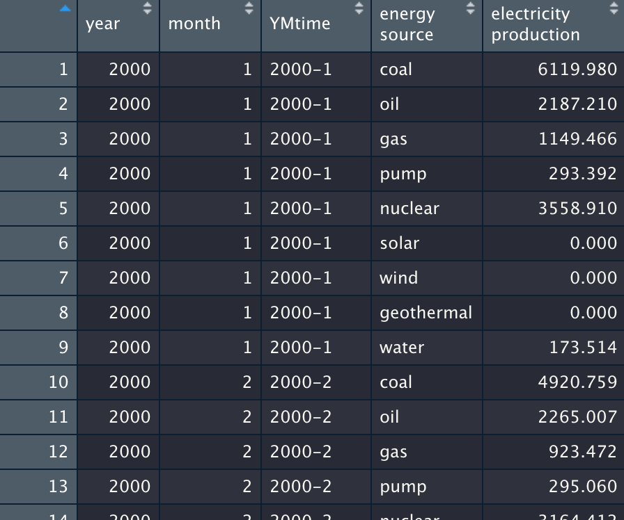
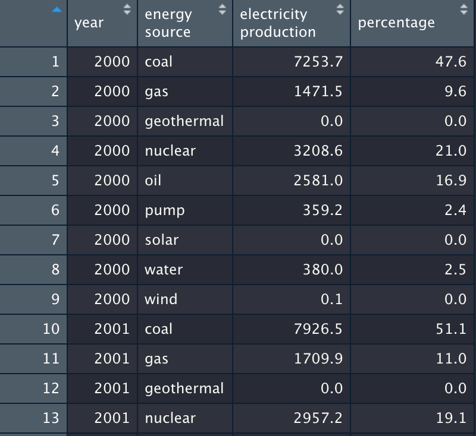
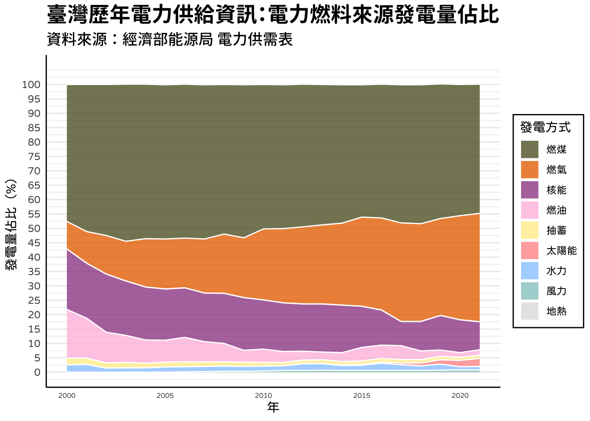
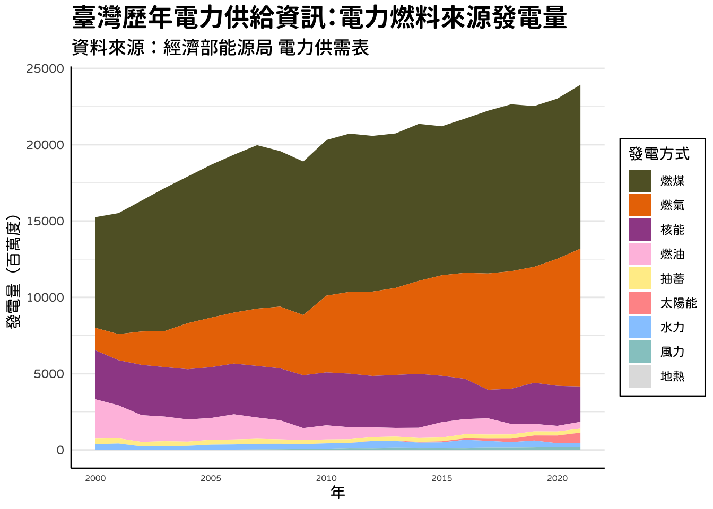

This article is written in Chinese.
2022.04.27 · 數據圖表
【R語言資料分析】電力資訊視覺化，看歷年來台灣電力結構轉變
本篇適合： 對資料新聞、資料分析有興趣的人；初學R語言的人。對R語言的 dplyr、ggplot 套件有一定了解的人，若您尚未接觸過也沒關係，可以跟著以下的文章試著做做看，也可以有些心得！
本篇重點：帶大家手把手透過R語言完成一份資料視覺化作品
紐約時報曾經於2018年12月製作過「How Does Your State Make Electricity?」專題，探討從2001–2017年美國各州電力系統結構變化。本篇目的旨在仿照紐約時報的做法，也製作一個屬於台灣的電力結構轉變資訊圖表。
（若您有付費紐約時報訂閱，可以看這篇，或有時候免費版也有權限可以看）
該篇文章是要探討歷年來（2001年至2017年）全美國（整體）及美國各州（局部）的發電燃料來源，畫出 stacked area plot（堆疊面積圖），此外會依照比例由高至低排，因此可以看到報導圖中，若有某種發電燃料來源比例激增，該區塊變會竄升至圖表上方，反之亦然。這樣的操作確實可有助於了解每個發電燃料來源在該年度的發電占比，以及歷年來的升降幅度。
談談資料來源
本次找到的台灣的資料是從政府開放資料下載而來，有每個月的發電資料，然而因為台灣的發電有分台電本身（發電業）及自用發電設備，因此資料還需要加以處理（數值相加）。
美國資料同樣也有每個月的發電資料，且單位也與台灣使用的相同（1000MWh = 百萬度），但是美國因為幅員遼闊，可能以各州之發電燃料來源之資料可能較有新聞意義。
資料前處理
觀察台灣電力供需表資料（csv檔）：

可以發現它還算是一個蠻整齊的資料，不過為求資料讀取效率及後續視覺化需求，我們還是需要對這筆資料做一些處理。
因為這個表格提供相當詳細的資訊，我們可能需要處理兩件事情：
- 該表除了「發電（供給）量」，其實也有「用電需求量」的許多欄位，雖說是一個值得使用的欄位，只是這次暫時不列入討論範圍之中。有興趣的人可以試著在這次實作過後也操作看看。因此在資料前處理時我們應該要可以先去除掉這些欄位。
- 我們須依照「發電種類」做分別，因此做一些調整，如太陽能發電有分「發電業」與「自用發電設備」，應該要將兩個欄位相加。
套件引入
options(stringsAsFactors = F)
options(scipen = 999) # 取消科學記號
library(tidyverse) # 引入tidyR相關套件，如dplyr等
library(lubridate)
讀取資料
透過 dplyr 套件中的 read_csv()，可以將該csv檔讀入環境當中，並儲存為tibble格式。
base R 其實也有「read.csv()」的函式，會儲存為dataframe格式，但個人建議如果現在要用 tidyR 風格，就盡量全數統一風格，以 tidyR 方式操作。也提供相關介紹連結給大家。
raw_us <- read_csv("elec.csv")
選取欄位
使用 dplyr 中 select()函數，選擇欄位，並為每個欄位取英文名稱。
raw <- raw %>%
select(
time = `日期(年/月)`,
total_elec = 總發電量,
elec = 總發電量_發電業,
pump = 總發電量_發電業_抽蓄水力,
fire_all = 總發電量_發電業_火力,
fire_coal = 總發電量_發電業_火力_燃煤,
fire_oil = 總發電量_發電業_火力_燃油,
fire_gas = 總發電量_發電業_火力_燃氣,
nuclear = 總發電量_發電業_核能,
green_all = 總發電量_發電業_再生能源,
green_water = 總發電量_發電業_再生能源_慣常水力,
green_floor = 總發電量_發電業_再生能源_地熱,
green_sun = 總發電量_發電業_再生能源_太陽光電,
green_wind = 總發電量_發電業_再生能源_風力,
own = 總發電量_自用發電設備,
own_fire_all = 總發電量_自用發電設備_火力,
own_fire_coal = 總發電量_自用發電設備_火力_燃煤,
own_fire_oil = 總發電量_自用發電設備_火力_燃油,
own_fire_gas = 總發電量_自用發電設備_火力_燃氣,
own_green_all = 總發電量_自用發電設備_再生能源,
own_green_floor = 總發電量_自用發電設備_再生能源_地熱,
own_green_sun = 總發電量_自用發電設備_再生能源_太陽光電,
own_green_wind = 總發電量_自用發電設備_再生能源_風力,
own_green_bioe = 總發電量_自用發電設備_再生能源_生質能,
own_green_trash = 總發電量_自用發電設備_再生能源_廢棄物
)
重新整理表格
依照「發電種類」做分別，將「發電業」與「自用發電設備」相加，使用mutate()函數。
（不過，其實也可以在上一步就做這件事，在此我們先分開做，讓各位有所了解）
cleaned <- raw %>%
mutate(
year = as.character(time) %>% substr(1,4) %>% as.integer() ,
month = as.character(time) %>% substr(5,6) %>% as.integer() ,
YMtime = paste(as.character(year), as.character(month), sep="-"),
coal = fire_coal + own_fire_coal,
oil = fire_oil + own_fire_oil,
gas = fire_gas + own_fire_gas,
solar = green_sun + own_green_sun,
wind = green_wind + own_green_wind,
geothermal = green_floor + own_green_floor,
water = green_water
) %>%
select(
year, month, YMtime, coal, oil, gas, pump, nuclear, solar, wind, geothermal, water
)
mutate 函數中，其實有做了一個「YMtime」，只是單純想示範若有意想將年份與月份資訊連結起來，可以使用這樣的方式，但並不會在後續視覺化有所影響，所以這個欄位亦可以不須製作。
繪製長表格
製作長表格是資料視覺化相當重要的步驟，利用gather()函數繪製長表格，並將每個年度進行年平均，作為該年度的數據，並計算電力個發電種類發電量比例。
cleaned_gather <- cleaned_gather %>%
group_by(year, `energy source`) %>%
summarize(
# 製作發電資訊「年平均」：將每年十二個月發電量平均
`electricity production` = round( mean(`electricity production`), 1)
)%>%
mutate(
percentage = round(100* `electricity production` / sum(`electricity production`), 1)
) %>% # 計算比例
ungroup()
輸出結果：

製作發電資訊「年平均」、計算各個發電占比
使用group_by()、summarize()和mutate()函數，製作發電資訊年平均，並計算各個發電占比。
cleaned_gather <- cleaned_gather %>%
group_by(year, `energy source`) %>%
summarize(
# 製作發電資訊「年平均」：將每年十二個月發電量平均
`electricity production` = round( mean(`electricity production`), 1)
)%>%
mutate(
percentage = round(100* `electricity production` / sum(`electricity production`), 1)
) %>% # 計算比例
ungroup()
此外，因為數據中有些許2022年（當年度）的資料，我們想先去除不看：
# 把2022年資料去掉
cleaned_gather <- cleaned_gather %>% head(nrow(cleaned_gather)-9)
結果：

資料視覺化 — — 進階 ggplot 操作
作圖為了模仿紐約時報，x軸將設定為年度，y軸為發電占比。
顏色採用部分，紐約時報似乎有盡量採用該燃料「類似」的顏色，如Coal（煤炭）使用土灰色、水力發電使用淺藍色等，但也只是大致如此，因此我們也盡量模仿紐時，顏色也盡量特別設定。
此外，為了使ggplot好看好讀，因此有許多手動設定，以下會一一介紹。
但首先，我們想針對「中文字型」做一些設定。
而中文字型如何操作，我也做了一個簡單的小筆記，有興趣也可以看看！
#顯示中文字型
library(showtext)
showtext.auto(enable = TRUE)
# 須預先上網下載字體，並成功掛載之電腦當中
font_add("jf-openhuninn", "jf-openhuninn-1.1.ttf")
font_add("GenJyuuGothicL-Medium", "GenJyuuGothicL-Medium.ttf")
font_add("GenJyuuGothicL-P-Bold", "GenJyuuGothicL-P-Bold.ttf")
th <-
theme(plot.title = element_text(family="GenJyuuGothicL-P-Bold"), # 思源柔黑體，可免費商用
plot.subtitle = element_text(family="GenJyuuGothicL-Medium"),
text = element_text(family="jf-openhuninn"), # 金萱粉圓體，可免費商用
axis.text.y = element_text(family="jf-openhuninn"),
axis.text.x = element_text(family="jf-openhuninn"),
legend.text = element_text(family="jf-openhuninn"),
)
接著就是繪圖，把圖表畫出來：
### 繪製發電量比例圖 - area plot
cleaned_gather %>%
ggplot() +
aes(
x = year,
y = percentage,
fill=`energy source`,
#labels='a'
) +
geom_area(
alpha = 0.8,
size = 0.5,
color = "white"
) +
labs(title = "臺灣歷年電力供給資訊：電力燃料來源發電量佔比",
subtitle = "資料來源：經濟部能源局 電力供需表",
x = "年",
y = "發電量佔比（%）",
) +
scale_y_continuous( breaks = seq(0,100,5), limits = c(0, 105) ) +
scale_fill_manual(
name="發電方式",
#guide = TRUE,
label = c(
'coal' = "燃煤",
'gas' = "燃氣",
'nuclear' = "核能",
'oil' = "燃油",
'pump' = "抽蓄",
'solar' = "太陽能",
'water' = "水力",
'wind' = "風力",
'geothermal' = "地熱"
),
values= c(
'coal' = "#616130",
'gas' = "#EA7500",
'nuclear' = "#9F4D95",
'oil' = "#FFC1E0",
'pump' = "#FFED97",
'solar' = "#FF9797",
'water' = "#97CBFF",
'wind' = "#95CACA",
'geothermal' = "#E0E0E0"
),
) +
### 圖表主題
theme_minimal() +
theme(
plot.title = element_text(size=18),
plot.subtitle = element_text(size=13),
legend.position="right",
legend.background = element_rect(colour = 'black', fill = 'white', linetype='solid'),
#legend.title = element_blank(),
panel.grid.minor.x = element_blank(),
panel.grid.major.x = element_blank(),
axis.line.x = element_line(colour = "black"),
axis.text.x = element_text(size=6),
axis.line.y = element_line(colour = "black"),
) + th
scale_fill_manual() ：一一設定每個堆疊的顏色
labs()：設定圖表標題、圖表副標題、x軸文字、y軸文字
theme_minimal()：選用minimal的ggplot主題
theme()內也有很多參數，包含：圖表標題、子標題、圖表框線、圖表x,y軸文字格式等。
最後「+th」代表將前面我們所設定的中文字型納入。
視覺化完成

上面是將「發電佔比」進行視覺化，不妨大家也可以試試看「發電量」如何視覺化，結果如下：

code
https://github.com/alan000322/datajour_analysis/blob/main/elec.Rmd
資料整理後可發現，這份台灣資料提供蠻多發電類別資訊。
值得一提的是，台灣從2020年至今，每年總發電量逐年攀升。
另外，可以看到燃煤發電之總發電量佔比近年來逐年微幅降低，燃氣發電之總發電量佔比逐年提高（與美國同），然而台灣的核能發電近年來佔比逐年降低，太陽能發電佔比逐年提高，應與當前蔡英文政府推動之能源政策有關（燃氣50%-燃煤30%-綠能20%）。
自己還是R初學者，還望各界不吝指教。